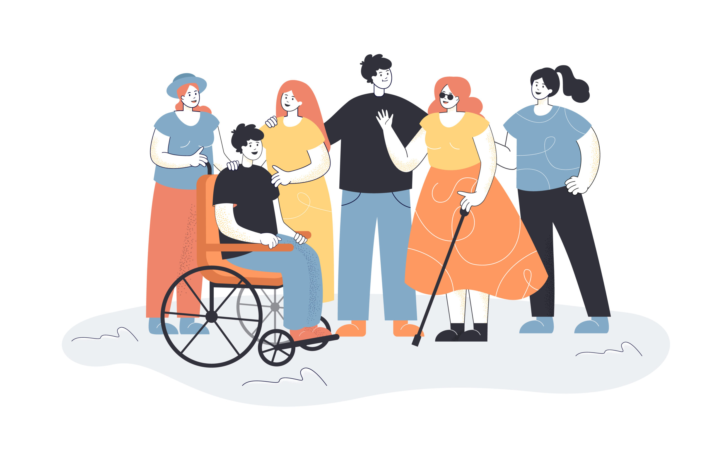

¿Por qué existe INCLUSIA?
Porque demasiadas personas han tenido que planear su vida alrededor de barreras que nunca debieron existir.
Una verdad incómoda
INCLUSIA nace desde una realidad que muchas personas prefieren no ver
Para muchas personas con discapacidad, salir de casa no es una rutina simple. Es un cálculo constante: dónde hay escalones, qué rutas no tienen acceso, qué lugares van a decir "sí somos incluyentes" y en la práctica no lo son.
El problema no empieza en el cuerpo. Empieza en decisiones de diseño que dejan por fuera, en una infraestructura hecha para un solo tipo de persona y en una cultura que sigue tratando la accesibilidad como un extra opcional.
Durante años, la respuesta fue cumplir por cumplir: una rampa imposible, un baño "adaptado" que no funciona, un espacio público que obliga a depender de otros. Eso no es inclusión, eso es sobrevivir al entorno.
INCLUSIA existe para cambiar esa lógica desde la raíz. No desde discursos correctos, sino desde experiencias reales, observables y humanas. Si una persona no puede moverse con autonomía, no estamos hablando de accesibilidad real.
Las barreras reales
No son casos aislados. Son escenas cotidianas.

Rampas mal diseñadas
Pendientes peligrosas y accesos simbólicos que existen en papel, pero no en la vida real.
Andenes sin acceso
Desniveles, huecos y cruces sin continuidad que convierten un trayecto corto en una barrera.

Transporte no adaptado
Paradas, buses y estaciones que no permiten un uso autónomo y seguro para todas las personas.
Espacios y baños no funcionales
Lugares públicos con diseños que impiden usar servicios básicos con seguridad y autonomía.
Punto de partida
El problema no es la discapacidad
El obstáculo real aparece cuando el entorno se diseña sin pensar en todas las personas.
- No es la silla de ruedas. Es la escalera sin alternativa.
- No es pedir apoyo. Es no tener información clara para decidir.
- No es la diferencia. Es el diseño que sigue excluyendo.
Lo que queremos cambiar
Una nueva forma de mirar la accesibilidad
Accesibilidad real
Pasar de la norma mínima a experiencias que sí permitan autonomía.
Experiencia humana
Diseñar desde la vida cotidiana de quienes enfrentan barreras todos los días.
Dignidad en lo cotidiano
Entrar, moverse y participar sin pedir favores ni sentirse fuera de lugar.
Independencia posible
Que las personas decidan cómo vivir su ciudad con libertad y confianza.
INCLUSIA existe para que nadie tenga miedo de salir.
Queremos un mundo donde la accesibilidad sea parte natural del diseño y no una corrección tardía. Un mundo en el que vivir plenamente no dependa de la suerte, sino de derechos que se cumplen.